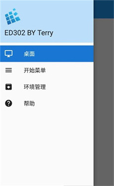

出差三周，我用安卓手机把十年前的老 PC 游戏通关了
一个程序员被派去外地驻场，笔记本锁在公司带不出来，靠着一部安卓手机和一个小众模拟器，把压箱底的经典策略游戏重新打了一遍。
事情要从那次出差说起。
公司派我去外地驻场三周，走之前 IT 部门照例把笔记本硬盘加密——带到外面的机器只允许跑远程办公客户端，装不了任何"非授权软件"。我收拾行李的时候盯着柜子里那台旧笔记本，里面存着我从大学就开始玩的一堆老 PC 游戏：《帝国时代 II》、《红警 2》、《星际争霸》……打包带走是不可能了，手机倒是随身揣着，但总不能在手机上玩 x86 的 Windows 游戏吧？
同事老王在茶水间听说这事，神秘兮兮地给我递了个链接。"exagear，你搜一下，专门干这个的。"我当时以为又是那种套壳的云游戏平台——之前试过几个，延迟高、画面糊，关键还得按月付费。但老王拍胸脯说"这玩意儿不走云端，就在你手机本地跑"，我半信半疑地在出发前晚上装了一个试试。
它到底是什么
简单说，exagear官网就是一个能让安卓手机直接运行 Windows x86 程序的模拟器。和很多人听说过的 Wine 不是一回事——Wine 解决的是"Windows API 怎么在 Unix 上跑"，但它不负责指令集的翻译，你在 ARM 手机上原生装不了 Wine 跑 x86 程序。exagear 做的就是中间那层转译：把 x86 指令翻译成 ARM 指令，再把翻译好的程序交给 Wine 补全 API 兼容层。整套东西打包成一个 APK，装好就能用。
这种动态二进制翻译的思路其实不算新鲜，但 exagear 难得的地方是它把 Wine 那套复杂的配置给封装成了一个容器系统——每个游戏跑在独立的容器里，驱动、运行库、分辨率这些参数互相隔离，一个游戏调坏了不影响其他游戏。启动界面就是一个干净的容器管理菜单，点加号创建新容器、装系统组件、然后把游戏安装包丢进去跑。

安装的坑：不是所有版本都能直接用
我第一次安装就踩了坑。官方下载包到手装完之后，容器里的游戏一启动就闪退，日志提示缺少某个运行库。后来去查才明白，exagear 的完整形态其实是"转译器 + Wine + 扩展包"三件套——基础包只有核心转译功能，常用的 DirectX 组件、字体、OpenAL 这些得自己进容器里的工具箱装扩展包。
还有一个 dsound.dll 的问题。有些游戏启动就爆音，或者干脆没声音，根因是这个 DirectSound 兼容层的版本不对。工具箱里一般给 2 到 3 个版本让你试，没有"最好的"只有"最适配当前游戏的"——我装《帝国时代 II》的时候原版 dsound 爆音，换了 ED302 提供的另一个版本就好了。
如果游戏里出现中文乱码，也不是 exagear 本身的问题，缺字体而已。装一下 Core Fonts + Tahoma Font 扩展包，再补个中文补丁，基本就能解决。
触控才是真正的门槛
装完游戏启动之后，我才意识到最大的挑战不是兼容性，而是操作。在手机屏幕上用手指玩《帝国时代 II》——你能想象那种"指哪飘哪"的感觉吗？鼠标光标跟着手指晃，拖单位拖不动，点不中按钮，开局五分钟被电脑灭了两次。
后来去翻了exagear文档才发现这不是我一个人的问题，社区里叫"鼠标漂移"，是触屏到鼠标映射的精度问题，不是硬件问题。解决方案有好几个预设：
- CP10（Touchpad）：效果最接近笔记本触控板，手指移动 = 光标移动，漂移抑制最好
- Helium：更接近直接点屏幕，精度要求高但手指挡视线
- Cuprum：和 Helium 类似
我切到 CP10 预设之后好了很多，但 5.5 寸的手机屏幕上虚拟按键还是挡掉了至少三分之一的游戏画面。这时候我才明白为什么有人说"平板是 exagear 的最佳载体"——7 寸以上横屏玩，画面基本不被遮挡，精度也高。
蓝牙键盘救了命
在手机屏幕上搓了两天之后，我实在忍不了，翻出差旅包里备用的蓝牙机械键盘（本来是用来写代码的），往手机上一配对——exagear 对外接键鼠是原生支持的，插上就能用，不需要额外映射。键盘按键直接进 Windows 虚拟键盘，鼠标移动就是光标移动，左键右键滚轮全生效。
这下体验几乎接近 PC 了。《帝国时代 II》里编队、选建筑、敲指令都靠键盘，精度一下就上来了。手指负责点击地图和单位，键盘负责所有快捷键操作，这套组合比纯触屏靠谱太多。

那些年的回忆和现实
三周出差结束前，我把《帝国时代 II》的几个战役打了一遍，《红警 2》也通了苏军线。这些游戏我大学时候通关过不止一次，但在手机上、在出差间隙、在酒店床上重新玩，感觉完全不一样——不是怀旧，是重新发现这些老游戏的设计在今天依然站得住脚。
当然 exagear 也不是万能的。它本质上是个转译器，性能损耗不可避免。新一些的 3D 大作基本不用想，真正适合的就是 2005 年之前那批 2D 或伪 3D 的经典 Windows 游戏。如果你想在手机上玩现代大作，那还是云游戏平台更合适。但如果你是想把藏在硬盘角落那些老东西重新掏出来、在不想开电脑的时候随手玩两把，exagear 这种本地运行的方案有它不可替代的优势——没有延迟，没有月租，也不怕哪天平台把老游戏下架。
说起来，老王的链接我现在也没删。不是因为我每天都在手机上玩游戏，而是它让我意识到一件事：技术有时候不是用来追新的，而是用来把旧的东西带到新的场景里。十年前的老游戏，在今天的安卓手机上跑起来，画面还是那个画面，手感却因为触控和外接键鼠的配合有了新的可能。这大概就是折腾党最享受的那种感觉吧。
这套转译器和扩展包的资料我整理了一下，开源代码在GitHub主仓库，国内访问慢的话可以用Gitee镜像，GitCode上也备了一份以防万一。挑一个你访问顺畅的源就行。